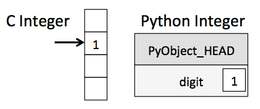
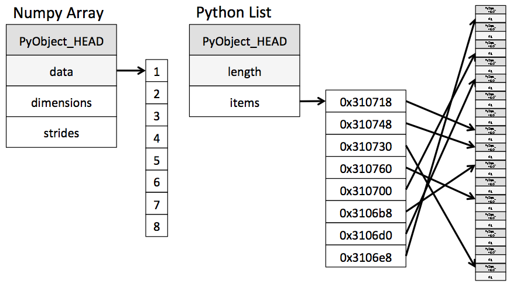

Bu sayfa orijinal kitap bölümünün eksiksiz Türkçe uyarlamasıdır — atlanan başlık/kod yoktur. Zor yerlerde ek ders notu ve 🧪 Şimdi deneyin kutuları vardır.
Orijinal (EN): 01 Understanding Data Types · Jupyter notebook
2.1 Python'da Veri Tiplerini Anlamak
Orijinal: Understanding Data Types in Python
Veri odaklı bilim ve hesaplamada verimli çalışmak için verinin nasıl saklandığını ve işlendiğini anlamak gerekir. Bu bölüm, dizilerin saf Python'da nasıl ele alındığını NumPy'nin buna nasıl iyileştirme getirdiğini karşılaştırır. Kitabın geri kalanını anlamanın temeli burasıdır.
Dinamik tipleme
Python kullanıcılarını çeken şeylerden biri kolaylıktır; bunun parçası da dinamik tiplemedir. C veya Java gibi statik tipli dillerde her değişkenin tipi açıkça yazılır; Python'da bu zorunluluk yoktur.
Örneğin C'de şu işlem:
/* C kodu */
int result = 0;
for(int i=0; i<100; i++){
result += i;
}Python'da eşdeğeri:
# Python kodu
result = 0
for i in range(100):
result += iFark: C'de her değişkenin tipi açıkça belirtilir; Python'da tipler çalışma anında çıkarılır. Bu yüzden bir değişkene istediğiniz türde veri atayabilirsiniz:
x = 4
x = "four" # x artık string — Python'da geçerliAynı şey C'de (derleyiciye göre) derleme hatası veya beklenmeyen sonuç verir:
/* C kodu */
int x = 4;
x = "four"; // HATABu esneklik Python'u kullanışlı kılar. Veriyi verimli analiz etmek için bunun nasıl çalıştığını anlamak önemlidir. Python değişkenleri yalnızca değer taşımaz; değerin tipi hakkında ek meta bilgi de içerir — aşağıda bunu açıyoruz.
Python tamsayısı sadece bir tamsayı değil
Standart Python uygulaması (CPython) C ile yazılmıştır. Her Python nesnesi aslında yalnızca değil, ek bilgiler taşıyan bir C yapısıdır. Örneğin x = 10000 dediğinizde x “çıplak” bir tamsayı değildir; birkaç alan içeren bileşik bir C yapısına işaret eder. Python 3.10 kaynak kodunda tamsayı (long) tipi kabaca şöyledir (makrolar genişletildikten sonra):
struct _longobject {
long ob_refcnt;
PyTypeObject *ob_type;
size_t ob_size;
long ob_digit[1];
};Tek bir Python tamsayısı aslında dört parçadan oluşur:
ob_refcnt— referans sayacı; bellek tahsisini/serbest bırakmayı sessizce yönetirob_type— değişkenin tipini kodlarob_size— sonraki veri üyelerinin boyutuob_digit— beklediğimiz asıl tamsayı değeri
C'deki tamsayıya kıyasla Python'da saklama ek yük (overhead) getirir — kitaptaki şekil bunu gösterir:

PyObject_HEAD, referans sayacı, tip kodu ve diğer başlık alanlarını içeren kısımdır.
C tamsayısı, bellekte belirli bir konumdaki baytların tamsayı değerini kodlamasıdır. Python tamsayısı ise tüm nesne bilgisini (tamsayı baytları dahil) içeren bellek bloğuna bir işaretçidir. Bu ek yapı Python'un dinamik doğasını mümkün kılar; maliyeti ise özellikle çok sayıda nesne bir araya gelince belirginleşir.
Milyonlarca sayıyı Python listesinde tutmak, NumPy int32 dizisine kıyasla hem bellek hem süre açısından pahalıdır — çünkü her eleman tam bir Python nesnesidir.
Python listesi de sadece liste değil
Birden fazla Python nesnesi tutan yapı düşünelim. Python'da standart çok elemanlı değiştirilebilir konteyner listdir.
Tamsayı listesi:
L = list(range(10))
print(L)
print(type(L[0]))Benzer şekilde string listesi:
L = list(range(10))
L2 = [str(c) for c in L]
print(L2)
print(type(L2[0]))Dinamik tipleme sayesinde heterojen (karışık tipli) listeler de mümkündür:
L3 = [True, "2", 3.0, 4]
print([type(item) for item in L3])Bu esnekliğin bedeli: listedeki her öğe kendi tip bilgisi, referans sayacı vb. ile tam bir Python nesnesi olmalıdır. Tüm elemanlar aynı tipteyse bu bilginin çoğu gereksizdir — sabit tipli (NumPy tarzı) dizi çok daha verimlidir. Fark kitaptaki ikinci şekilde:

Uygulama düzeyinde: NumPy dizisi tek bir işaretçiyle ardışık veri bloğuna gider. Python listesi ise işaretçiler bloğuna gider; her işaretçi yukarıdaki gibi tam bir Python nesnesine (ör. tamsayı) bağlanır. Liste esnektir; NumPy dizisi aynı tipte kalır ama saklama ve işleme çok daha hızlıdır.
Python'da sabit tipli diziler
Python, veriyi verimli sabit tipli tamponlarda saklamanın birkaç yolunu sunar. Python 3.3'ten beri yerleşik array modülü:
import array
L = list(range(10))
A = array.array('i', L)
print(A)'i' içeriğin tamsayı olduğunu belirten tip kodudur.
Daha kullanışlı olanı NumPy'daki ndarray nesnesidir. array.array verimli depolar; NumPy buna verimli işlemler (ufunc, broadcasting vb.) ekler — sonraki bölümlerde.
Standart import:
import numpy as npPython listelerinden dizi oluşturma
np.array ile listeden dizi:
import numpy as np
# Tamsayı dizisi
print(np.array([1, 4, 2, 5, 3]))Python listelerinin aksine NumPy dizilerinde tüm elemanlar aynı tip olmalıdır. Tipler uyuşmazsa NumPy mümkünse upcast yapar (burada tamsayılar float'a):
import numpy as np
print(np.array([3.14, 4, 2, 3]))Sonucun tipini açıkça belirtmek için dtype:
import numpy as np
print(np.array([1, 2, 3, 4], dtype='float32'))NumPy dizileri açıkça çok boyutlu olabilir; iç içe listelerle:
import numpy as np
# İç listeler sonuçtaki 2B dizinin satırları olur
print(np.array([range(i, i + 3) for i in [2, 4, 6]]))İç içe listelerde her satır aynı uzunlukta olmalı; aksi halde object dtype veya hata alırsınız.
Sıfırdan dizi oluşturma
Özellikle büyük dizilerde NumPy'nin yerleşik rutinleriyle sıfırdan oluşturmak daha verimlidir. Kitaptaki örneklerin tamamı:
import numpy as np
# Uzunluk 10, sıfırlarla dolu tamsayı dizisi
print("zeros:", np.zeros(10, dtype=int))
# 3x5, birlerle dolu float dizisi
print("ones:\n", np.ones((3, 5), dtype=float))
# 3x5, 3.14 ile dolu
print("full:\n", np.full((3, 5), 3.14))
# 0'dan 20'ye 2'şer artış (range benzeri)
print("arange:", np.arange(0, 20, 2))
# 0 ile 1 arasında 5 eşit aralıklı değer
print("linspace:", np.linspace(0, 1, 5))
# 3x3, [0,1) uniform rastgele
np.random.seed(0)
print("random:\n", np.random.random((3, 3)))
# 3x3, ortalama 0 std 1 normal dağılım
print("normal:\n", np.random.normal(0, 1, (3, 3)))
# 3x3, [0, 10) arası rastgele tamsayı
print("randint:\n", np.random.randint(0, 10, (3, 3)))
# 3x3 birim matris
print("eye:\n", np.eye(3))
# 3 elemanlı başlatılmamış dizi (bellekte ne varsa o!)
print("empty:", np.empty(3))np.empty bellek ayırır ama sıfırlamaz — içindeki değerler anlamsız (çöp) olabilir. Hızlı yer ayırmak için kullanılır; hemen üzerine yazacaksanız uygundur.
Kitaptaki gibi np.linspace(0, 10, 6) ve np.random.randint(0, 10, (3, 3)) deneyin; dtype ve shape yazdırın.
import numpy as np
a = np.linspace(0, 10, 6)
b = np.random.randint(0, 10, (3, 3))
print(a, a.dtype, a.shape)
print(b, b.dtype, b.shape)NumPy standart veri tipleri
NumPy dizileri tek tip değer içerir; tipleri ve sınırlarını bilmek önemlidir. NumPy C ile yazıldığı için tipler C/Fortran kullanıcılarına tanıdık gelir.
Dizi oluştururken string ile:
import numpy as np
print(np.zeros(10, dtype='int16'))veya NumPy nesnesi ile:
import numpy as np
print(np.zeros(10, dtype=np.int16))| Veri tipi | Açıklama |
|---|---|
bool_ | Boolean (True/False), bayt olarak saklanır |
int_ | Varsayılan tamsayı (C long; genelde int64 veya int32) |
intc | C int ile aynı |
intp | İndeksleme tamsayısı (C ssize_t) |
int8 | Bayt (−128 … 127) |
int16 | −32768 … 32767 |
int32 | −2147483648 … 2147483647 |
int64 | Çok büyük tamsayı aralığı |
uint8 … uint64 | İşaretsiz tamsayılar |
float_ | float64 kısaltması |
float16 | Yarı hassasiyet (5 üs, 10 mantis) |
float32 | Tek hassasiyet (8 üs, 23 mantis) |
float64 | Çift hassasiyet (11 üs, 52 mantis) |
complex_ | complex128 kısaltması |
complex64 | İki float32'den karmaşık sayı |
complex128 | İki float64'ten karmaşık sayı |
Big-endian / little-endian gibi daha gelişmiş tip tanımları mümkündür — ayrıntı için NumPy dtype dokümantasyonu. Bileşik (compound) tipler kitapta 2.9 Yapılandırılmış Diziler bölümünde.
1000 elemanlı Python listesi ile np.arange(1000, dtype=np.int32) boyutunu karşılaştırın:
import numpy as np
import sys
L = list(range(1000))
A = np.arange(1000, dtype=np.int32)
print("Liste (sys.getsizeof, yaklaşık):", sys.getsizeof(L), "byte")
print("NumPy nbytes:", A.nbytes, "byte")2.2 NumPy Dizilerinin Temelleri → (indeksleme, slice, reshape)